Introduction to Scikit Learn
Overview
Teaching: 40 min
Exercises: 0 minQuestions
What is Scikit Learn
Objectives
Master Scikit Learn for Machine Learning
2.1 What is Scikit-Learn

- Scikit-learn is probably the most useful library for machine learning in Python.
- The sklearn library contains a lot of efficient tools for machine learning and statistical modeling including classification, regression, clustering and dimensionality reduction.
- The sklearn package contains tools for:
- data splitting
- pre-processing
- feature selection
- model tuning using resampling
- variable importance estimation
as well as other functionality.
2.2 Install sklearn
We have installed the conda environment skln and include the scikit-learn package on Palmetto.
2.3 Pre-processing using sklearn
There are several steps that we will use sklearn for. For preprocessing raw data, we gonna use sklearn in these tasks:
- Preprocessing with missing value
- Preprocessing: transform data
2.3.1 Pre-processing with missing value
- Most of the time the input data has missing values (
NA, NaN, Inf) due to data collection issue (power, sensor, personel). - There are three main problems that missing data causes: missing data can introduce a substantial amount of bias, make the handling and analysis of the data more arduous, and create reductions in efficiency
- These missing values need to be treated/cleaned before we can use because “Garbage in => Garbage out”.
import pandas as pd
data_df = pd.DataFrame(pd.read_csv('/zfs/citi/workshop_data/python_ml/r_airquality.csv'))
data_df.head()
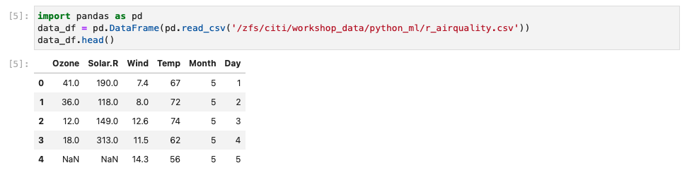
- There are several ways to treat the missing values:
- Method 1: remove all missing
NAvalues
data1 = data_df.dropna()
data1.head()
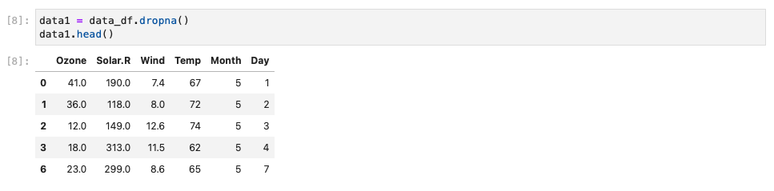
- Method 2: Set
NAto mean value
data2 = data_df.copy()
data2.fillna(data2.mean(), inplace=True)
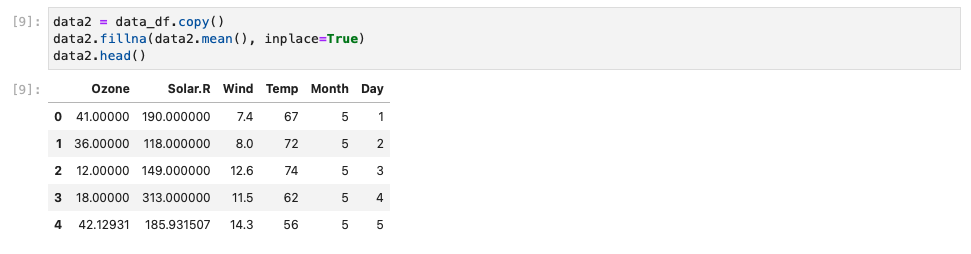
- Method 3: Use
Imputeto handle missing values
In statistics, imputation is the process of replacing missing data with substituted values. Because missing data can create problems for analyzing data, imputation is seen as a way to avoid pitfalls involved with listwise deletion of cases that have missing values. That is to say, when one or more values are missing for a case, most statistical packages default to discarding any case that has a missing value, which may introduce bias or affect the representativeness of the results. Imputation preserves all cases by replacing missing data with an estimated value based on other available information. Once all missing values have been imputed, the data set can then be analysed using standard techniques for complete data. There have been many theories embraced by scientists to account for missing data but the majority of them introduce bias. A few of the well known attempts to deal with missing data include:
- hot deck and cold deck imputation;
- listwise and pairwise deletion;
- mean imputation;
- non-negative matrix factorization;
- regression imputation;
- last observation carried forward;
- stochastic imputation;
- and multiple imputation.
import numpy as np
from sklearn.impute import SimpleImputer
imputer = SimpleImputer(missing_values=np.nan, strategy='mean')
data3 = pd.DataFrame(imputer.fit_transform(data_df))
data3.columns = data_df.columns
data3.head()
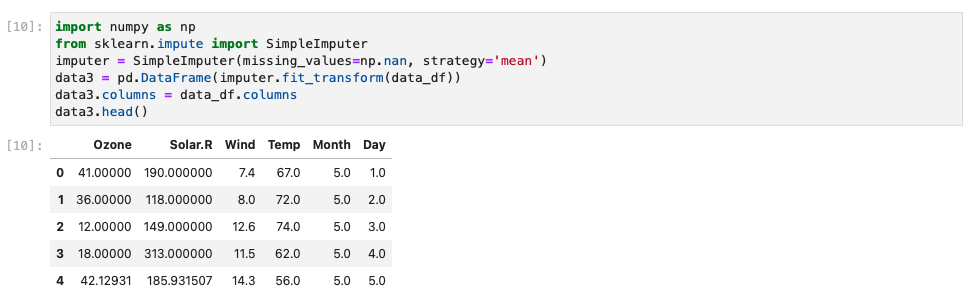
Note: SimpleImputer converts missing values to mean, median, most_frequent and constant.
import numpy as np
from sklearn.impute import SimpleImputer
imputer = SimpleImputer(missing_values=np.nan, strategy='median')
data4 = pd.DataFrame(imputer.fit_transform(data_df))
data4.columns = data_df.columns
data4.head()
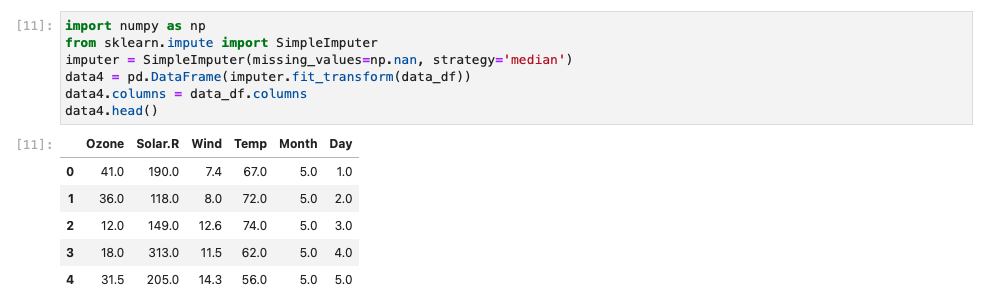
knnImpute can also be used to fill in missing value
from sklearn.impute import KNNImputer
imputer = KNNImputer(n_neighbors=2, weights="uniform")
data_knnimpute = pd.DataFrame(imputer.fit_transform(data_df))
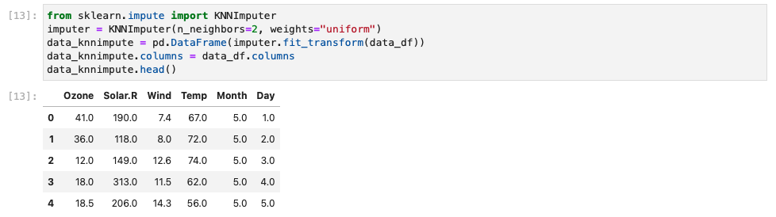
Note:
- In addition to KNNImputer, there are IterativeImputer (Multivariate imputer that estimates each feature from all the others) and MissingIndicator(Binary indicators for missing values)
- More information on sklearn.impute can be found here
2.3.2 Pre-processing with Transforming data
2.3.2.1 Using Standardization

- Standardization comes into picture when features of input data set have large differences between their ranges, or simply when they are measured in different measurement units for example: rainfall (0-1000mm), temperature (-10 to 40oC), humidity (0-100%), etc.
- Standardition Convert all independent variables into the same scale (mean=0, std=1)
- These differences in the ranges of initial features causes trouble to many machine learning models. For example, for the models that are based on distance computation, if one of the features has a broad range of values, the distance will be governed by this particular feature.
- The example below use data from above:
from sklearn.preprocessing import scale data_std = pd.DataFrame(scale(data3,axis=0, with_mean=True, with_std=True, copy=True)) data_std.columns = data3.columns data_std.head() # axis used to compute the means and standard deviations along. If 0, independently standardize each feature, otherwise (if 1) standardize each sample.
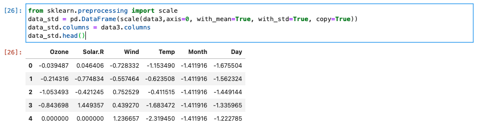
2.3.2.2 Using scaling with predefine range
Transform features by scaling each feature to a given range. This estimator scales and translates each feature individually such that it is in the given range on the training set, e.g. between zero and one. Formulation for this is:
X_std = (X - X.min(axis=0)) / (X.max(axis=0) - X.min(axis=0))
X_scaled = X_std * (max - min) + min
from sklearn.preprocessing import MinMaxScaler
scaler = MinMaxScaler()
#By default, it scales for (0, 1) range
data_scaler = pd.DataFrame(scaler.fit_transform(data3))
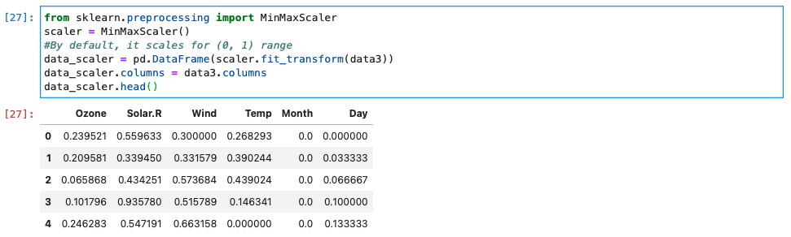
2.3.2.3 Using Box-Cox Transformation
- A Box Cox transformation is a transformation of a non-normal dependent variables into a normal shape.
- Normality is an important assumption for many statistical techniques; if your data isn’t normal, applying a Box-Cox means that you are able to run a broader number of tests.
- The Box Cox transformation is named after statisticians George Box and Sir David Roxbee Cox who collaborated on a 1964 paper and developed the technique.
- BoxCox can only be applied to stricly positive values
from sklearn.preprocessing import power_transform data_BxCx = pd.DataFrame(power_transform(data3,method="box-cox")) data_BxCx.columns = data3.columns
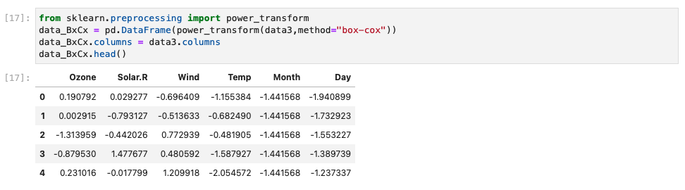
2.3.2.4 Using Yeo Johnson Transformation
While BoxCox only works with positive value, a more recent transformation method Yeo Johnson can transform both positive and negative values.
data_yeo_johnson = pd.DataFrame(power_transform(data3,method="yeo-johnson"))
data_yeo_johnson.columns = data3.columns
data_yeo_johnson.head()
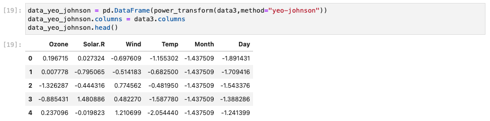
Graphical representation of different transformation techniques
import matplotlib.pyplot as plt
f = plt.figure(figsize = (10,10))
ax1 = f.add_subplot(231)
ax1.hist(data3["Ozone"])
ax1.set_title("Original probability")
ax1.set_xlabel('Ozone')
ax1.set_ylabel('Count')
ax2 = f.add_subplot(232)
ax2.hist(data_BxCx["Ozone"])
ax2.set_title("Box-Cox Transformation")
ax2.set_xlabel('Ozone')
ax2.set_ylabel('Count')
ax2 = f.add_subplot(233)
ax2.hist(data_yeo_johnson["Ozone"])
ax2.set_title("Yeo-Johnson Transformation")
ax2.set_xlabel('Ozone')
ax2.set_ylabel('Count')
ax2 = f.add_subplot(234)
ax2.hist(data_std["Ozone"])
ax2.set_title("Standard Transformation")
ax2.set_xlabel('Ozone')
ax2.set_ylabel('Count')
ax2 = f.add_subplot(235)
ax2.hist(data_scaler["Ozone"])
ax2.set_title("Scaling Transformation")
ax2.set_xlabel('Ozone')
ax2.set_ylabel('Count')
plt.show()
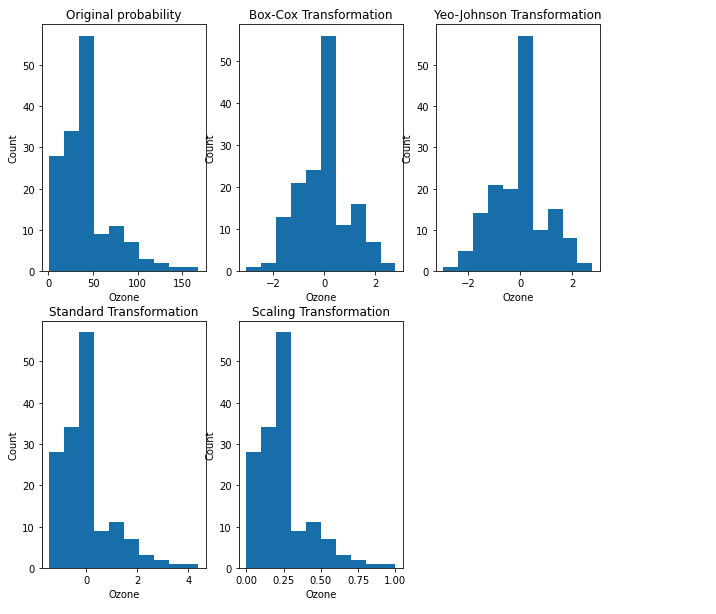
Key Points
sklearn